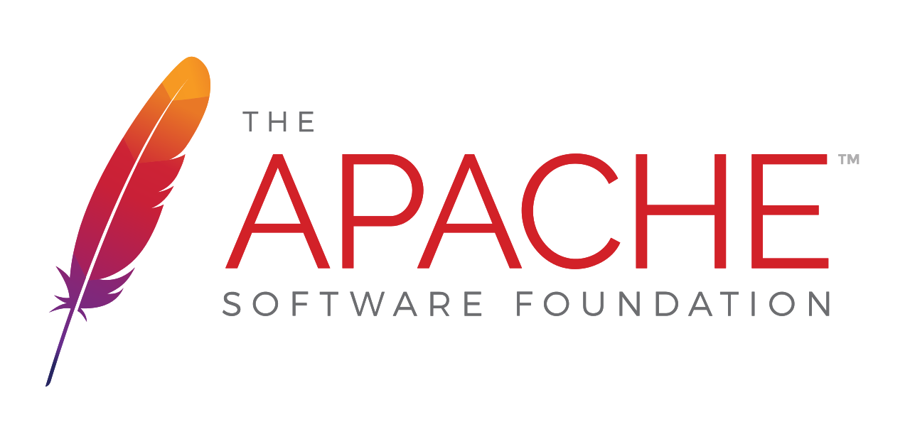
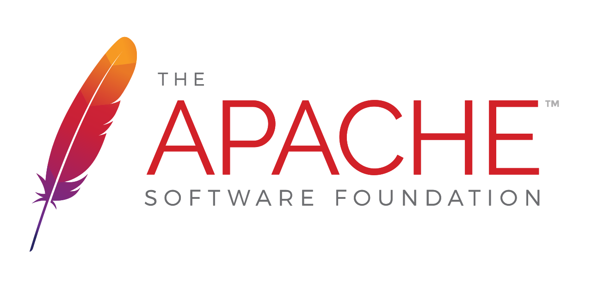
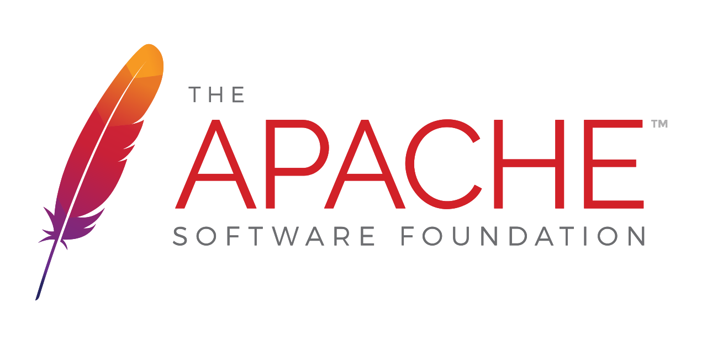

Wykorzystywane technologie
 



Powrót do strony wyboru
Dokładnie i bezlitośnie przetesuję Twoje oprogramowanie
Skantaktuj się ze mnąJestem zafascynowany nowinkami technologicznymi. Chętnie i szybko przyswajam wiedzę, dokładnie tworzę, analizuję oraz sprawdzam wszystkie przypadki testowe.
Z największą uwagą podchodzę do oprogramowania. Precyzyjnie, starannie i dokładnie analizuję działanie oprogramowania w każdym kroku procesu.
Nie tylko wykonuję przypadki testowe, ale też poświęcam dużo energii na przygotowanie się do działania. Krytycznie podchodzę do opisanych warunków testowych - szukam i uzupełniam luki, wyjaśniam nieścisłości.
Mój konik - łączy ze sobą elementy analizy biznesowej oraz testowania. Po zapoznaniu się z aplikacją, jej założeniami oraz kierunkiem rozwoju, weryfikuję, czy oprogramowanie spełnia założenia.
Skrupultnie czytam dokumentację, wyłapuję błedy i nieścisłości. Potrafię wykryć niespójne myslenie, luki w dokumencie oraz fragmenty, które mogą wprowadzać czytelników w błąd.

Do każdego projektu podchodzę indywidualnie, jednak pewne elementy procesu udało mi się pogrupować i ustandaryzować.
Zaznajomienie się z wizją klienta, celami oprogramowania, trudnościami, z jakimi musi się mierzyć.
Opracowanie planu: przypadki testowe, schematy przepływu, przypadki użycia etc. Plan zyskuje dokładny harmonogram.
Wykonuję zaplanowane działania.
Opisuję przebieg działania, wnioski, porady oraz rekomendacje.